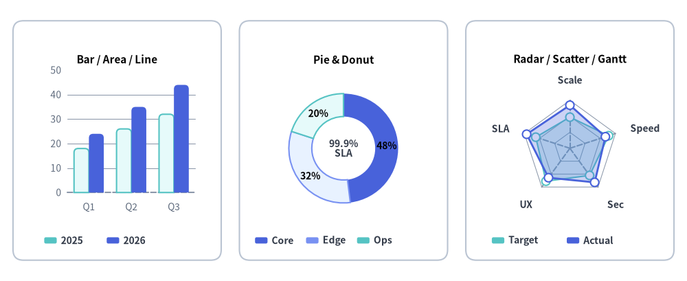
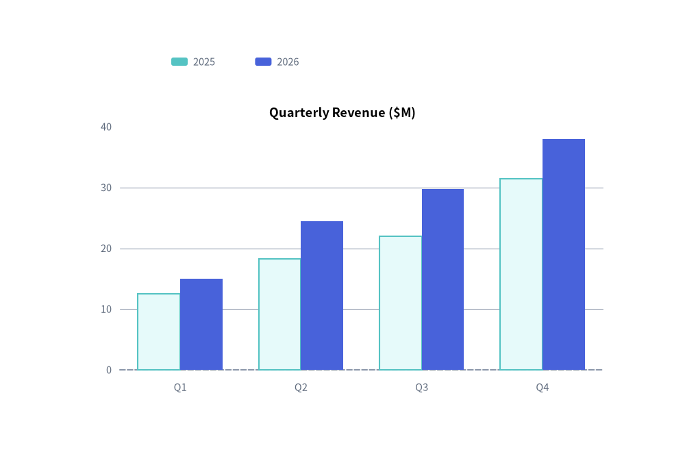
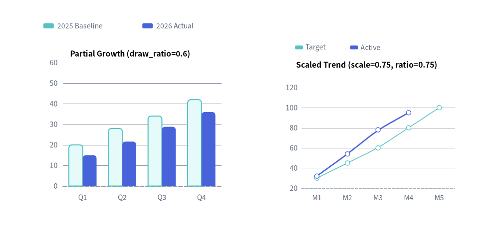

Charts 概要
drawlib.charts モジュールは、比較・統計・相関・プロジェクトスケジュール向けの宣言的かつ純粋 Python 製のデータ可視化エンジンを提供します。
全 8 系統のチャートファミリーはファーストクラスのベクターキャンバスコンポーネントとして描画され、吹き出しやカード、各種テクニカルダイアグラムと同じ統一座標平面上でシームレスに共存できます。

Source Code
from drawlib.canvas import save, setup
from drawlib.charts.bar import BarChart
from drawlib.charts.pie import PieChart
from drawlib.charts.radar import RadarChart
from drawlib.shapes import rectangle
from drawlib.styles import Colors, Styles
setup(width=132, height=54)
card_style = Styles.Neutral.patch(shape_r=2.0, shape_line_color=Colors.Gray4, shape_fill_color=Colors.White)
rectangle((22.5, 27.0), width=40.0, height=46.0, style=card_style)
rectangle((66.0, 27.0), width=40.0, height=46.0, style=card_style)
rectangle((109.5, 27.0), width=40.0, height=46.0, style=card_style)
# 1. Left: Compact BarChart (Bar / Area / Line Cartesian family)
bar = BarChart(
categories=["Q1", "Q2", "Q3"],
axis_line_style=Styles.MutedDashed,
axis_text_style=Styles.Muted.patch(text_size=10.0),
grid_style=Styles.MutedThin,
width=36.0,
height=33.0,
bar_mode="group",
bar_r=0.8,
title="Bar / Area / Line",
title_style=Styles.BlackBold.patch(text_size=11.0),
)
bar.add_series("2025", [18.0, 26.0, 32.0], style=Styles.SecondaryNeutral)
bar.add_series("2026", [24.0, 35.0, 44.0], style=Styles.PrimaryFlat)
bar.draw(xy=(4.5, 12.0))
bar.draw_legend(xy=(8.5, 7.8), text_style=Styles.DarkBold.patch(text_size=10.0), orientation="horizontal")
# 2. Center: Compact PieChart Donut
pie = PieChart(
radius=10.5,
width=36.0,
height=33.0,
hole_ratio=0.58,
center_text="99.9%\nSLA",
center_text_style=Styles.DarkBold.patch(text_size=10.0),
title="Pie & Donut",
title_style=Styles.BlackBold.patch(text_size=11.0),
value_text_style=Styles.BlackBold.patch(text_size=10.0),
value_format="{:.0f}%",
)
pie.add_slice("Core", 48.0, style=Styles.PrimaryFlat)
pie.add_slice("Edge", 32.0, style=Styles.PrimaryNeutral)
pie.add_slice("Ops", 20.0, style=Styles.SecondaryNeutral)
pie.draw(xy=(48.0, 12.0))
pie.draw_legend(xy=(49.0, 7.8), text_style=Styles.DarkBold.patch(text_size=10.0), orientation="horizontal", item_gap=1.8)
# 3. Right: Compact RadarChart (5 spokes)
radar = RadarChart(
categories=["Scale", "Speed", "Sec", "UX", "SLA"],
axis_line_style=Styles.MutedDashed,
axis_text_style=Styles.DarkBold.patch(text_size=10.0),
grid_style=Styles.MutedThin,
radius=9.2,
width=36.0,
height=33.0,
min_value=0.0,
max_value=100.0,
levels=3,
grid_shape="polygon",
title="Radar / Scatter / Gantt",
title_style=Styles.BlackBold.patch(text_size=11.0),
)
radar.add_series("Target", [65, 85, 70, 85, 75], style=Styles.SecondaryNeutral, fill_alpha=0.25, line_style="dashed")
radar.add_series("Actual", [90, 78, 88, 76, 95], style=Styles.PrimaryFlat, fill_alpha=0.28)
radar.draw(xy=(91.5, 12.0))
radar.draw_legend(xy=(94.5, 7.8), text_style=Styles.DarkBold.patch(text_size=10.0), orientation="horizontal")
save()
1. なぜ Drawlib の純粋 Python チャートなのか？
Matplotlib、Seaborn、Plotly など従来の Python 可視化ライブラリが独立した画像ファイルや Web 専用キャンバスを生成するのに対し、Drawlib のチャートはファーストクラスのベクターキャンバス要素として設計されています。
- キャンバス上でのシームレスな共存: アーキテクチャ構成図、吹き出し、アイコンと同じキャンバスをそのまま共有できます。
- 決定論的なレイアウト計算: 余白、目盛り間隔、プロット領域はすべて明示的なキャンバス寸法（
width、height）から数学的に算出されます。 - 一貫したテーマ適用と存在ベースのスタイリング: チャートは「スタイル＝表示の有無（Style-as-Presence）」の思想に従います。要素に
Styleが指定されていれば描画され、省略（None）されていれば不要なデフォルトのグリッドや背景は一切描画されません。また、凡例は本体から分離されており、chart.draw_legend(...)で任意の座標に明示的に描画します。
from drawlib.canvas import save, setup
from drawlib.charts.bar import BarChart
from drawlib.styles import Styles
setup(width=100, height=66)
chart = BarChart(
categories=["Q1", "Q2", "Q3", "Q4"],
axis_line_style=Styles.MutedDashed,
axis_text_style=Styles.Muted.patch(text_size=10.5),
grid_style=Styles.MutedThin,
width=82,
height=45,
title="Quarterly Revenue ($M)",
title_style=Styles.BlackBold.patch(text_size=13.0),
)
chart.add_series("2025", [12.5, 18.2, 22.0, 31.4], style=Styles.SecondaryNeutral)
chart.add_series("2026", [15.0, 24.5, 29.8, 38.0], style=Styles.PrimaryFlat)
chart.draw(xy=(9, 7))
chart.draw_legend(xy=(25, 57), text_style=Styles.Muted.patch(text_size=10.5), orientation="horizontal")
save()

2. 8 つのチャートファミリーとサブモジュールの公開シンボル
Drawlib のチャートは、軸・スケール・凡例 の共通基盤の上に、drawlib.charts 配下の 8 つの専門サブモジュールとして整理されています。
| モジュール | 主要クラス | 補助データモデル | 公開されている型リテラル・エイリアス | 主な用途 |
|---|---|---|---|---|
drawlib.charts.bar |
BarChart |
Series, Axis |
Mode, Orientation, FormatterType, DrawDirection, LegendPosition |
カテゴリ比較（縦棒・横棒・集合・積み上げ）。 |
drawlib.charts.line |
LineChart |
Series, Axis |
LineStyle, PointShape, FormatterType, DrawDirection, LegendPosition |
時系列に沿った連続メトリクスやトレンド（折れ線またはスプライン補間）。 |
drawlib.charts.area |
AreaChart |
Series, Axis |
Mode, FormatterType, DrawDirection, LegendPosition |
時系列にわたる累積ボリュームや全体に対する内訳トレンド。 |
drawlib.charts.pie |
PieChart |
Slice |
FormatterType, DrawDirection |
構成比の可視化、ドーナツグラフ、中央 KPI バッジ表示。 |
drawlib.charts.radar |
RadarChart |
Series |
GridShape, FormatterType, DrawDirection, LegendPosition |
多属性の評価、スキルマトリクス、スパイダープロット。 |
drawlib.charts.scatter |
ScatterChart |
Series, Point, Axis |
ScaleType, PointShape, DrawDirection, LegendPosition |
2 次元の相関分析、クラスタ分布、3D バブルプロット。 |
drawlib.charts.gantt |
GanttChart |
Task, Section, Milestone, Marker, Dependency |
DrawDirection |
プロジェクトロードマップ、フェーズ別タスク、マイルストーン、依存関係の矢印。 |
drawlib.charts.heatmap |
HeatmapChart / HeatmapOverlay |
Row, Cell, Spot |
OverlayMode, BlendMode, DrawDirection, FormatterType, Orientation |
2D マトリクスヒートマップおよびダイアグラム（ClassDiagram、ArchitectureDiagram、GeoMap など）上の空間熱分布／ホットスポットオーバーレイ。 |
公開されている型リテラル一覧
| 型エイリアス | 定義 | 使用箇所 |
|---|---|---|
Mode (bar) |
Literal["group", "stack"] |
BarChart(bar_mode=...) |
Mode (area) |
Literal["overlap", "stack"] |
AreaChart(mode=...) |
Orientation |
Literal["vertical", "horizontal"] |
BarChart(orientation=...), draw_legend(orientation=...), draw_colorbar(orientation=...) |
LineStyle |
Literal["solid", "dashed", "dotted", "dashdot"] |
LineChart、AreaChart、RadarChart の系列ストロークパターン |
PointShape |
Literal["circle", "square", "rhombus", "triangle", "none"] |
ScatterChart（全 5 形状）、LineChart・AreaChart・RadarChart（"circle"、"square"、"none"） |
GridShape |
Literal["polygon", "circle"] |
RadarChart(grid_shape=...) の同心グリッド形状 |
ScaleType |
Literal["linear", "log"] |
Axis(scale=...) の線形（Nice Numbers）または常用対数（log10）スケーリング |
OverlayMode |
Literal["smooth", "contour"] |
HeatmapOverlay(mode=...) のガウス熱グラデーションまたはベクター等高線リング |
BlendMode |
Literal["add", "max"] |
HeatmapOverlay(blend_mode=...) における重なり合うホットスポットの合成モード |
FormatterType |
str | Callable[[float], str] | None |
数値・目盛りフォーマット（"{:.1f}%"、lambda v: f"${v:,.0f}"） |
DrawDirection |
Literal["bottom_to_top", "left_to_right"] |
Series、Slice、Task、Row における部分空間描画の方向（drawlib.charts.DrawDirection としても公開） |
3. 共通チャートアーキテクチャと存在ベースのスタイリング
Drawlib のすべてのチャートは一貫したライフサイクルと座標規約に従います（軸フォーマット、対数スケール、凡例カスタマイズ、get_size() の詳細は 軸・スケール・凡例 を参照してください）。
1. 寸法を指定したインスタンス化と必須アンカースタイル
初期化時にカテゴリラベルと必須の axis_line_style（直交座標系・レーダー・ガントチャートの構造的基準線）を指定します。
chart = BarChart(
categories=["US", "EU", "APAC"],
axis_line_style=Styles.Primary,
axis_text_style=Styles.Black,
grid_style=Styles.MutedThin,
width=90,
height=50,
title="Regional Distribution",
title_style=Styles.BlackBold,
)
2. 存在ベース（Style-as-Presence）のスタイル一覧（Style | None = None）
Drawlib のチャートは厳格な 「Style-as-Presence（スタイルの指定＝要素の表示）」 ルールを採用しています。任意の視覚要素はデフォルトが None であり、明示的な Style を渡したときのみ描画されます。
| 任意スタイル引数 | デフォルト | Style 指定時に有効化される視覚要素 |
対象チャートクラス |
|---|---|---|---|
axis_text_style |
None |
軸の目盛りラベル、カテゴリ名、放射軸ラベル（RadarChart）、列／行ラベル（GanttChart）。 |
BarChart, LineChart, AreaChart, RadarChart, ScatterChart, GanttChart |
grid_style |
None |
背景の数値グリッド線、同心リング（RadarChart）、縦方向の列区切り線（GanttChart）。 |
BarChart, LineChart, AreaChart, RadarChart, ScatterChart, GanttChart |
value_text_style |
None |
棒グラフの先端、折れ線／レーダーの頂点、円グラフの扇形内、散布図のポイント横の数値ラベル。 | BarChart, LineChart, AreaChart, PieChart, RadarChart, ScatterChart |
title_style |
None |
チャート上部のタイトル文字列（空でない title 文字列が必要）。 |
全 7 チャートクラス |
background_style |
None |
チャート外枠コンテナカードの背景塗りと枠線ストローク。 | 全 7 チャートクラス |
scale_text_style |
None |
レーダーチャートの垂直上向きスポークに沿った同心リングの数値ラベル。 | RadarChart |
center_text_style |
None |
ドーナツ中央穴の KPI バッジテキスト（hole_ratio > 0 かつ center_text の指定が必要）。 |
PieChart |
header_style |
None |
上部タイムライン列ヘッダー帯の背景塗り／枠線。 | GanttChart |
zebra_style |
None |
スケジュール行に交互に敷かれる横方向の背景ストライプ。 | GanttChart |
progress_text_style |
None |
タスクバー内部または横に表示される進捗率テキスト（"85%"）。 |
GanttChart（チャート全体またはタスク単位） |
3. データ系列の追加と軸の設定
明示的なスタイルを指定してデータ系列を追加し、必要に応じて configure_x_axis() / configure_y_axis() で軸の上下限、目盛り間隔、単位、対数スケールを設定します。
chart.add_series("Allocated", [120, 180, 240], style=Styles.PrimaryFlat)
chart.add_series("Available", [90, 150, 210], style=Styles.SecondaryFlat)
chart.configure_y_axis(min_value=0, max_value=300, tick_step=100, unit="TB")
4. 左下アンカーでの描画と分離配置された凡例
すべてのチャートは draw(xy=(x, y)) によって**左下角（bottom-left）**を基準に配置されます。凡例は本体から切り離されており、draw_legend(xy=(x, y), text_style=...) で任意の座標に描画できます。
chart.draw(xy=(15, 10))
chart.draw_legend(xy=(85, 50), text_style=Styles.Black)
4. コンポーネントライフサイクル・部分描画・比例スケーリング
Drawlib のすべてのチャートは統一された 4 フェーズのコンポーネントライフサイクル（1. インスタンス化 -> 2. 要素の登録 -> 3. 状態の変更 -> 4. 描画）に従っており、ステップバイステップのスライド構築や段階的なデータ表示、複数チャートを並べたダッシュボード作成を容易に行えます。
1. 要素の表示切り替え（show）と軸スケールの固定維持
すべての要素登録メソッド（add_series、add_slice、add、add_task、add_section、add_milestone、add_marker、add_dependency）は show: bool = True を受け取り、変更可能な要素インスタンス（Series、Slice、Point、Task など）を返します。
elem.show = False（またはdraw_ratio = 0.0）に切り替えると、その要素の描画はスキップされますが、データセット全体（100%）に基づく自動軸スケール、円グラフの合計比率、ガントチャートの行スロット配置はそのまま維持されます。スライドやアニメーションフレーム間で系列を順番に表示しても、軸の目盛りが急にジャンプすることはありません。
2. 部分空間描画（draw_ratio と draw_direction）
Series、Slice、Task オブジェクトは draw_ratio: float = 1.0（0.0〜1.0）および draw_direction: DrawDirection（"bottom_to_top" または "left_to_right"）をサポートしています。
| チャートクラス | デフォルトの draw_direction |
"bottom_to_top" の挙動 |
"left_to_right" の挙動 |
|---|---|---|---|
BarChart |
"bottom_to_top"（"vertical" 時）／"left_to_right"（"horizontal" 時） |
縦向き：すべての棒がベースラインから上へ伸長。横向き：下のカテゴリから順に表示。 | 縦向き：左のカテゴリから順に表示。横向き：すべての棒がベースラインから右へ伸長。 |
LineChart |
"left_to_right" |
すべての頂点がベースラインから目標の y へ向かって同時に上昇。 |
曲線が弧長に沿って左から右へ連続的に伸長。 |
AreaChart |
"left_to_right" |
面ポリゴンと上部輪郭線がベースライン（または下段スタック）から上昇。 | 面ポリゴンと上部輪郭線が左から右へ連続的にスイープ。 |
ScatterChart |
"left_to_right" |
各ポイントが下端軸から目標の y へ上昇（半径も radius * r に拡大）。 |
X 軸の範囲に沿って左から右へポイントを順次表示。 |
PieChart |
"left_to_right" |
扇形が内側の穴から外周半径へ向かって放射状に拡大。 | 扇形が start_angle から角度幅 sweep_angle * r に沿ってスイープ。 |
RadarChart |
"bottom_to_top" |
ポリゴンが中心の min_value から外側へ放射状に拡大。 |
ポリゴンが外周の放射軸に沿って順番にスイープ。 |
GanttChart |
"left_to_right" |
タスクバーが下端から本来の高さまで縦方向に伸長。 | タスクバーが start から end に向かって横方向に伸長。 |
3. 一時的な寸法オーバーライドと比例スケーリング（scale）
すべての draw() 呼び出しでは、一時的なレイアウト寸法のオーバーライド（width、height、および PieChart／RadarChart の radius）に加えて、scale: float = 1.0（draw_legend() でも対応）を指定できます。scale != 1.0 を渡すと、プロット形状・線幅・ポイントマーカー・フォントサイズを含むチャート全体が基準点 xy から一様に比例スケーリングされます。
from drawlib.canvas import save, setup
from drawlib.charts.bar import BarChart
from drawlib.charts.line import LineChart
from drawlib.styles import Styles
setup(width=115, height=58)
# Left: BarChart with partial series rendering (draw_ratio)
bar = BarChart(
categories=["Q1", "Q2", "Q3", "Q4"],
axis_line_style=Styles.MutedDashed,
axis_text_style=Styles.Muted.patch(text_size=10.0),
grid_style=Styles.MutedThin,
width=48,
height=38,
title="Partial Growth (draw_ratio=0.6)",
title_style=Styles.BlackBold.patch(text_size=11.0),
bar_r=0.8,
)
bar.add_series("2025 Baseline", [20, 28, 34, 42], style=Styles.SecondaryNeutral, draw_ratio=1.0)
bar.add_series("2026 Actual", [25, 36, 48, 60], style=Styles.PrimaryFlat, draw_ratio=0.6)
bar.draw(xy=(6, 10))
bar.draw_legend(xy=(10, 52), text_style=Styles.Muted.patch(text_size=10.0), orientation="horizontal")
# Right: LineChart rendered at compact 0.75x proportional scale
line = LineChart(
categories=["M1", "M2", "M3", "M4", "M5"],
axis_line_style=Styles.MutedDashed,
axis_text_style=Styles.Muted.patch(text_size=13.5),
grid_style=Styles.MutedThin,
width=60,
height=46,
title="Scaled Trend (scale=0.75, ratio=0.75)",
title_style=Styles.BlackBold.patch(text_size=15.0),
smooth=True,
)
line.add_series("Target", [30, 45, 60, 80, 100], style=Styles.SecondaryNeutral, line_style="dashed")
line.add_series("Active", [32, 54, 78, 95, 120], style=Styles.PrimaryFlat, line_width=2.5, draw_ratio=0.75)
line.draw(xy=(62, 10), scale=0.75)
line.draw_legend(xy=(68, 47), text_style=Styles.Muted.patch(text_size=13.5), orientation="horizontal", scale=0.75)
save()
